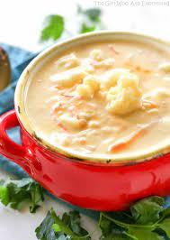

Cauliflower Soup Recipe

Ingredients
2 Cups Whole Milk
1 Head of Cauliflower
2 Carrots
2 Celery Stalks
1 Onion
1 Stick Butter
2 TBS Flour
8 oz Sharp Cheedar Cheese
Andouille Sausage
Kale
Tobasco (optional)